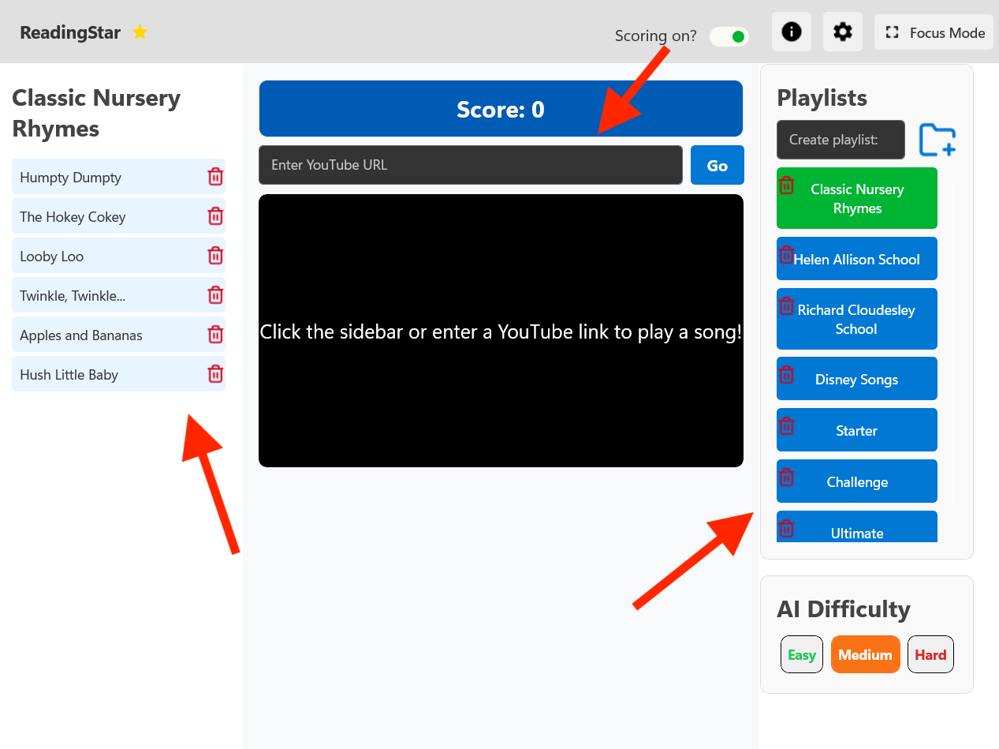
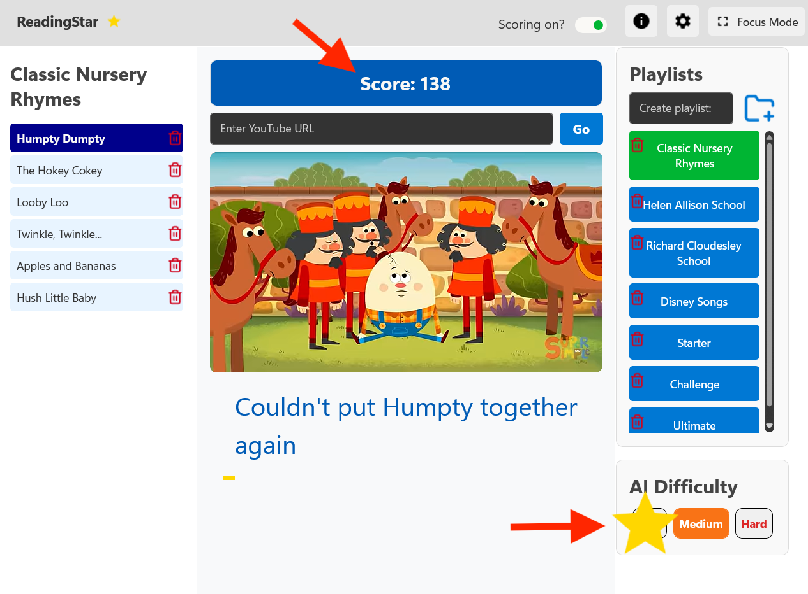
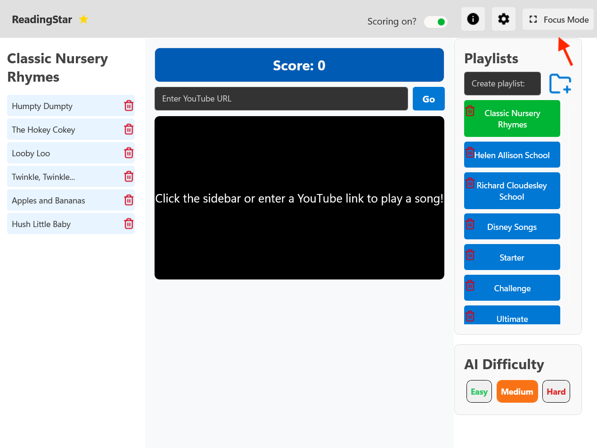
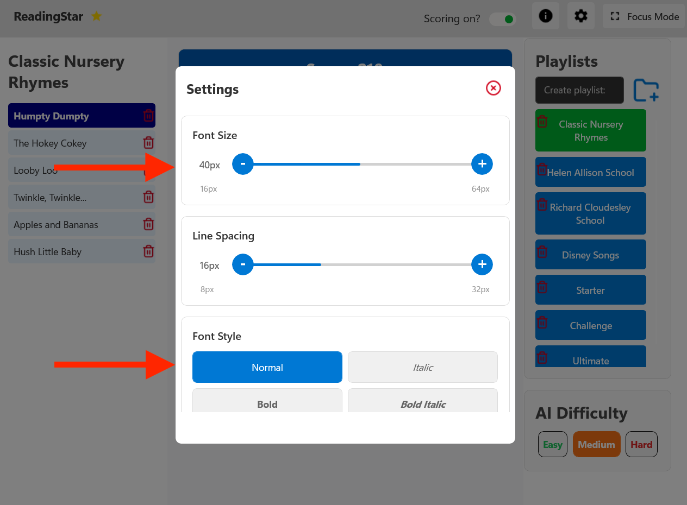

User Manual
A comprehensive guide to using ReadingStar
Introduction
Welcome to Reading Star, your AI assisted karaoke game. Reading Star offers a fun and interactive way to practice reading and speech through singing. This user manual will guide you through all the features and functionalities of the app.
Recommended Requirements
- Windows 10 or above
- 4-8 gigabytes of RAM
- Internet connection
- 2 gigabytes of storage space
Installation
- Download the Reading Star installer
- Open your downloads folder
- Double click the Reading Star installer and follow the instructions
Features
Music Selection
To select a song:
- Pick a playlist from the right column
- Pick a song from the left column
- Alternatively you can paste a YouTube link into the search box on top.
Scoring System
Once a music is started, a star will appear for each recognised phrase, and the score will increment. After finishing a song, detailed analysis will be carried on and displayed as a percentage over the music video.
Focus Mode
Click the focus button in the top right to remove unnecessary visual elements. This feature can help neurodiverse individuals with reducing distraction. The theme of the background can be customised in the settings.
Lyrics Highlighting
Once the music video starts, the lyrics will be displayed below the video. The yellow sliding bar under the lyrics indicates the speed of the words. Follow the word that is highlighted by the yellow bar for most accuracy.
Font Customisation
The font and the size of the lyrics can be customised through the settings menu on the top right. Click the font that is most legible and the size that is most appropriate for your preferences. This will display the lyrics in a format that is easiest to read.